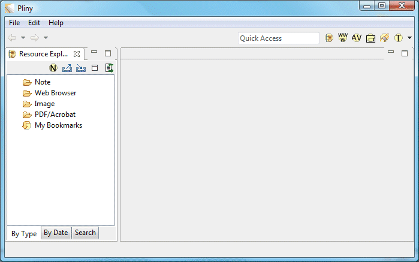
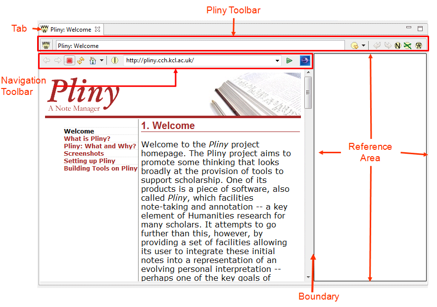
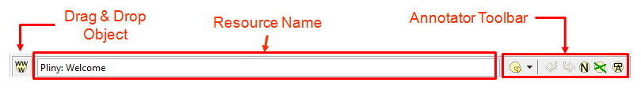
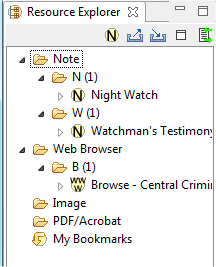
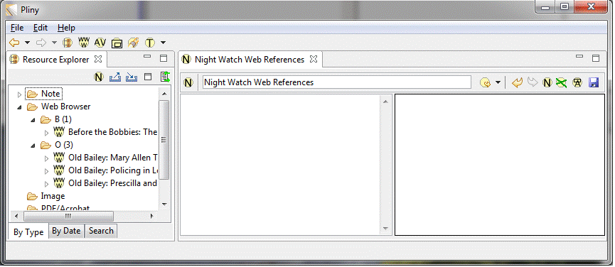
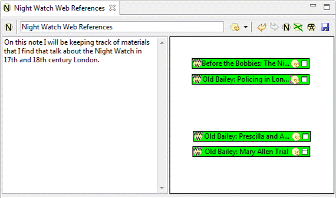
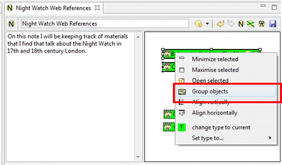

|
|
As you probably know by now, Pliny is in part a tool to assist you in annotation and note taking, and indeed, as you will see later, you can use Pliny to annotate digital resources such as PDF files or web pages. In this tutorial we will demonstrate how you can use Pliny with web-based materials. Pliny has some tools that will help you manage materials you read from the WWW in a useful fashion, and we expect that for most of you the first use of Pliny could well be to work with WWW materials in this way. Think of it as a more sophisticated version of your browser's bookmark or favourites tool.
If you are starting up Pliny for the first time you will find that Pliny has some setting up tasks to do and the startup will take a little longer than usual. Furthermore, if you are using Pliny in its standalone packaging (rather than as a plugin to Eclipse) for the first time you will be shown Pliny's "welcome screen" which points you to materials (like this tutorial) that will help you start using Pliny. Close the welcome screen once you are ready to begin to use Pliny in earnest. When the setup is finished and after you have finished with the welcome screen, Pliny will show you a screen similar to the following:

You have put no data into Pliny yet, so there isn't very much to see here. A general introduction to how Pliny lays out things on the screen can be found in the help section at Getting Started with Pliny which you might like to consult after you finish reading this tutorial. For now, however, we can make do with a brief introduction. You can see Pliny's menu and tool bars showing in the top area of Pliny's window (on the Macintosh, as you might expect, Pliny's menu appears at the top of the screen instead, in the usual place on a Macintosh for such things). Pliny also divides up the screen into rectangular areas called panes, and when it starts up the first time it divides the main area of its screen below the menu and toolbar into two panes -- a long and narrow left, and a larger right one. Then it places Pliny's Resource Explorer in left one. The larger right pane is left empty (and shows as grey to indicate that it is currently empty). This is the primary area where work is done in Pliny and is called the Editor Pane (borrowing terminology from Eclipse, an environment that forms the basis for Pliny).
Since we are going to use Pliny's embedded web browser, the first step is to get it started.
To start the web browser within Pliny you click on the browser icon in Pliny's main toolbar, which is showing near the top right corner of the Pliny window:

In response the Pliny window will change to this:
The grey area which originally represented the empty editor pane has now gained a tab (containing the text "Pliny: Welcome"). The space immediately below it in the editor pane has been filled with a toolbar just below the tab, and then the rest of the area divided into two sections -- to the left is the area showing the browser area, including the display of a webpage with a set of browser buttons and a field for the current URL above it. To the right is an empty white space called the reference area (described in more detail shortly). To the left of the editor pane we can still see Pliny's Resource Explorer. The screen snapshot is made rather small so that it's image will fit well into this help screen. In reality, on your computer the editor pane is probably wider, and there will be more space to show more of the webpage.
Since this is the first time you have started the browser in Pliny, the browser will start up showing the default home page for Pliny: the web page from pliny.cch.kcl.ac.uk -- the Pliny project's home page. You can change the browser's home page if you wish -- see the description of how to do this in the section Browser Controls in the Web Browser reference section.
You can, of course, change the size of Pliny's window overall in the
way you do this with any program on your computer. But, you can also change the
distribution of the panes within Pliny's window as well by dragging the
boundaries right or left between the Resource Explorer, web page view, and the
reference area if you wish. Indeed, you may want to increase the width of the
web page display. You could close the Resource Explorer pane by clicking on the
X in its tab, although we don't do this in this tutorial. If you do close it,
you can bring it back at any time by pushing its button in the tool bar
( ) which you can find in
the toolbar near the top of Pliny's window. At the moment the reference area
within the browser area (to its right) is not doing anything for you and you
may be tempted to make it as small as possible. We'll soon see how it is used,
however. There is more discussion on pane management in the section
Managing Panes elsewhere in the help that you
might want to consult after you have finished this tutorial. For now, you might
try moving the boundaries a little just to see how that is done.
) which you can find in
the toolbar near the top of Pliny's window. At the moment the reference area
within the browser area (to its right) is not doing anything for you and you
may be tempted to make it as small as possible. We'll soon see how it is used,
however. There is more discussion on pane management in the section
Managing Panes elsewhere in the help that you
might want to consult after you have finished this tutorial. For now, you might
try moving the boundaries a little just to see how that is done.
Let us now shift our focus for a while to the editor pane itself. In the next set of figures we have stopped showing the Resource Explorer, although in fact it will still be showing on your screen.
Here, then, is the web browser as it appears in Pliny's Editor Pane, with the main parts labelled in orange:

For more details about Pliny's web browser consult its reference section. For now, however, all you need to know is that the web page you are seeing here is generated by one of your usual machine's web browser (perhaps Internet Explorer, Safari, or FireFox), and that the smaller right area of the editor pane (currently empty) -- the reference area -- is added by Pliny as a space for recording notes you might want to make as you read the web page -- more about this shortly.
It is important to understand that are two toolbars appearing on different parts of the embedded web browser:
First, we look at the toolbar area directly under the tab. This is called the "Pliny toolbar" and we'll see later that it appears at or near the top of the editor pane in more than one place in Pliny. It contains three parts, labelled here:

For the moment we'll focus on the right end -- labelled here as the "Annotator Toolbar".It contains icons for tools you will use to work with materials in the associated reference area (the area to the right in the figure above). The tool buttons it contains will change somewhat depending upon the kind of thing you are working with in the editor pane area. In the general introduction to toolbars (described in more detail elsewhere among these help pages) it is called the Editor Toolbar. It is labelled the Annotator Toolbar above.
Also in the Pliny Toolbar, and to the left of its Annotator Toolbar section you will probably have noticed a field labelled above as "Resource Name". In Pliny a web page can be one kind of item called a "resource", and all Pliny resources, including web pages, can have a name. For a web page the name starts out being the title taken from the web page iteself, but you can change the name of the Pliny resource for this webpage by typing a new one in this field. More about this later.
At the left end of the Pliny toolbar is the icon labelled "Drag and Drop" object. We will explain its use elsewhere in these tutorials, but we can briefly say here that this icon can be used to drag and drop a reference to the current resource (here a web page) to other places in Pliny. We'll see later how this is useful.
Below the Pliny toolbar is a toolbar that is specific to web browsing and provides conventional Web navigation services. It is labelled Navigation Toolbar in the figure above and is displayed directly above the area of the screen showing a web page. It looks like this:
The Navigation Toolbar is used to manage web browsing. For example, in it is a box (the browser's location field) into which you can put a URL (showing here http://pliny.cch.kcl.ac.uk/). You can use it in the same way that you use the URL area in your browser when it is operating outside of Pliny. The URL can be either typed in there (in which case you push the green arrow-head "go button" after it to go to the URL you provided), or you can copy a URL from, say, your regular browser and place it on the location field.
Once you are viewing a web page of interest it will display and operate exactly as it does outside of Pliny. You can, for instance, click on any links you find in the page itself to navigate to other pages -- exactly as you would with a conventional web browser. After you have navigated from one webpage to another the other buttons in the Navigation Toolbar will become more useful. For example, you will find there a back button (the arrow pointing to the left at the left end of the Browser control area) which acts exactly like the normal browser back button. There are other buttons that you can click on to perform the normal range of browser operations. These are described in detail in the Pliny help reference section for Pliny's Embedded browser in the section called Browser Controls. You might want to consult it after you have finished this tutorial.
One uses Pliny is to record notes about things you find interesting in materials that you are reading. Suppose, for example, that you have turned on Pliny's web browser and are working with material on the WebSite "Proceedings of Old Bailey" (http://www.oldbaileyonline.org/, project directors: Tim Hitchcock and Robert Shoemaker), and come across the reports of the trial of a person named Mary Allen for theft. As you read the note you are struck by the prominent role of London's Night Watch in the trial's proceedings, and you decide to record this observation in a note.
This is where the area that is currently empty to the right of the web browser area -- the reference area -- comes in. The reference area is linked to the current web page that the browser is displaying, and will change each time you navigate to a new web page. Since it is attached to the current web page you can create notes that you wish to associate with a web page by putting them in this area. Any time you return to this page in the future the notes you have placed there will re-appear -- rather as if you had written them in the margins of the pages of a book.
The reference area Pliny provides for you is a 2-dimensional space -- you can (and must!) lay out notes that you wish to record for this web page here. Think of it as similar to the margin of a book, with the key useful difference that you can make it much wider than the normal width of a book margin if you have a lot of notes to associate with this page. How do you create a note?
This is telling you that Pliny is waiting for you to specify where in the reference area you want the note (actually references to notes and Pliny objects -- we'll describe what this means in more detail elsewhere) to appear.
Thus, we must first specify a space in the reference area where we want the new note to appear. Since this is the first note we have created for this page the reference area that will contain it is currently empty. Hence it probably doesn't particularly matter where it goes -- just define an area that is relatively small in the space by holding down the mouse button and dragging out a small space from top left to bottom right. As you drag Pliny will show you a grey area representing the area you have specified:
When the area is about this size release the mouse button. Pliny will transform the area you have defined into what is called in Pliny a reference object for a new note. It will look like this:
Now, we are also ready to put in some body text for this note. The light green area which takes up most of the reference object's area is used to store the notes textual content. Double click on it, and type in some text that you want to store as the body of the note, something like "The night watch is prominent in the trial of Mary Allen". When this is done the screen area will look like this:
The note you have created has been associated with this web page by Pliny. As long as you keep this note around Pliny will show it to you whenever you return to the same web page (by "same" here, we mean the web page with the same URL).
You can see that this is a kind of annotation action, similar to what you might in a book. However, when we write in the margin of a book we don't feel the need to provide a title for our writing! Why does a Pliny note have a title? Well, although this new note appears here beside the web page it belongs to, and we may not really need a title here for it to be understood, you will soon see that a Pliny note can appear in other contexts within Pliny where there is too little space to show the entire note. In this situation a title for the note is useful -- the text it contains is relatively short and if the title is carefully chosen you will be able to identify which note it is you are seeing even if only the title is visible at the time.
Enough now about the first note. Suppose now that you wish to add another note to the same page -- further down in the page you have found a bit of the testimony of the watchman that is interesting to you. It would be nice if one could highlight a spot in the webpage text such as this which would simply say "something interesting is here on this page". Unfortunately, the browser software (Internet Explorer, FireFox, Safari, etc.) which is displaying the web page to us within Pliny is not developed as a part of Pliny's software development, and it does not tell Pliny where items that it is displaying (including text) are located on the screen. Since Pliny cannot find out where the text is on the page it is not possible for Pliny to attach objects to it.
Since we cannot attach an object to the text of interest we have to draw attention to it in some other way. One way is to create a note in the reference area for this page that contains a quotation of the text we want to remember on the page. We could create this note containing the interesting quotation in the same way we described above -- clicking on the New Note button, defining an area on the screen for our new note, and then typing in the text from the web page. Pliny, however, provides a short cut that uses a drag-and-drop gesture.
(The orange line shown in the figure does not in fact appear on the screen while you are doing the drag and drop. We show it here to show you the path of the mouse as you drag the selected text from the browser window into the reference area.)
When you release the mouse button, a reference object will appear, with the text you have dragged from the webpage as its content:
We just used drag and drop to take some text from a current web page and turn it into a note inside Pliny. Drag and dropping of text from any source -- even one outside of Pliny -- that supports drag and drop (some text, say, from Microsoft Word, for example), will work the same way -- select the text in a Word document outside of Pliny and drag into a Pliny reference area to make Pliny turn the dragged text into a note. We have tried to develop Pliny to make use of drag and drop in various situations because it is a kind of interaction with the computer -- a gesture -- which often seems the most natural way to indicate what you want done.
Let us now return to the note Pliny has just created from the text on the web page. First, we can see that the text takes up more space in the new note's reference object than the space currently provided by it. Notice, then, the scroll bar to the right which allows us in this situation to scroll through all the text. We will see in a moment how to change the size and position of the notes we have now created. However, sometimes it is useful to keep the reference object smaller than the size of the text it contains.
We used drag and drop as a quick way to create a new note from some selected text. We have made Pliny support dragging and dropping of materials in any many ways as we could, so that the creation and management of materials involves as little effort on your part as we could manage. Studies have shown that note-taking works best when the system burdens the note taker with as little additional mental effort as possible, and often we found that drag and drop seems to be a most natural gesture.
We now have two notes that we have created (albeit by two different means) in the reference area associated with this webpage. Any time in the future that we return to view this webpage from within Pliny these notes will be displayed -- in the same way that once you write in the margins of a book each time to return to that page in the book your notes are still there.
Unlike in a book, however, what appears in the reference area is changeable at any time, and it is now time to examine how one manages materials that are displayed there. We will not mention all the possibilities here in this introductory tutorial, but all the details are described in the help document Annotation/Reference Area, which you might want to review after finishing this tutorial.
First, The contents and title of notes can be changed at any time. Simply double click on either the title or the note body area and edit the text as you wish.
A note is displayed inside something called a "reference object". We will describe more about the parts of the reference object shortly. However, you can see that of the two notes we have made the area for the note contents for the first note is too large for the amount of text it contains, and the area provided for the contents of the second note is too small (although Pliny, recognising that there is more text to display than room to show it provides a scroll bar to allow you see all the text it contains. One can change the size of a reference object any time you wish. To do so, first select the reference object by clicking (single-click) in its title area (showing green here -- careful to avoid clicking on any of the icons displayed there in the top left and right corners, since they act as buttons that will cause other changes to happen that we will describe later). Pliny will show that it is selected by displaying a darker black border with selection handles around it:
You can then adjust the size by pointing and dragging (by holding down the mouse button) on any of the 8 "handles" (the little boxes) that are displayed.
Since reference objects sit on a 2D reference area, one can arrange them by positioning them in this area. You can, if it seems useful, use a spatial arrangements of the objects to mean anything that you wish. For now, you can try dragging a selected object by simply pointing at its header (to first select it) and dragging the object around by moving the mouse while holding down the mouse button. You can select several objects in a reference area (material in the section Annotation/Reference Area tells you how), and if you do so, and drag any of them around, all the items then selected will move as well.
If you wish to delete a reference object you first select it, and then choose "Delete" from the edit menu (or push the delete key). You can select a block of objects. All selected objects will be deleted.
If you delete something by mistake and wish to bring it back you can use the Edit/Undo menu command to do so. Indeed, other actions (such as moving or resizing) can be undone in this way if you wish.
Pliny allows you to draw a line between any two reference objects in a reference area. Drawing such a line will imply that the two objects are connected, although the exact meaning of the connection need not be specified (however it can be made clearer by associating a "type" with the connection line -- see the discussion about types in the section on the Type Manager, elsewhere in these help documents if you want to know more about this).
Suppose we want to make evident the connection between the two notes we have created by drawing a line between them. Do the following:
The line is connected to the objects at each end -- if you move either object you will find that the line follows it. You can delete a line by clicking on it to select it and by pushing the delete key or choosing menu "edit/delete".
The colour of objects (both reference objects and connectors) is controlled by the "type" associated with them and you can change the colour of any object in the reference area by either changing the colours associated with the type associated with that object (in which all objects or connectors of that type will have their colour changed as well), or by changing the type associated with the object. There is more discussion about "types" in Pliny in the help section about the Type Manager.
Any Reference object, such as those holding the notes we have associated with this webpage, can be minimized so that it takes up less space in the reference area. When a reference object is minimized only its title (and the icons in the title area) show. As we shall see later, reference objects to notes can always be minimized and revealed fully, although some other things that reference objects can display can show only their title area -- can only show minimized, so to speak.
Let us minimize the Watchman's Testimony note. Locate the minimize
icon ( ) at the right end of its
title area, and click on it. The object will switch to its minimized
display:
) at the right end of its
title area, and click on it. The object will switch to its minimized
display:
To put it back to its original size click on the right-end icon (now showing "un-minimize" icon (). Pliny will remember the last un-minimized depth of the object and will use that to restore the item to an un-minimized size.
While an item is minimized you will find that you can change its length, but not its height by dragging on the objects handles.
As you can see, there are other icons in the title area of our note's reference object. We will introduce them elsewhere in these tutorials. If you want more detail now, you can consult the reference section of these help documents, in document Reference Object for more detailed information.
Pliny stores materials that it can display to you in objects called Resources, and keeps track of those resources in a view object called the "Resource Explorer". You might recall that Pliny started with this Resource Explorer showing in the narrow left-hand pane. We now turn our focus from the web browser in the editor pane to this Resource Explorer pane. We will introduce you here to the basic ways that it operates, but a section in the help's reference section descibes it in more detail. After reading this section of the tutorial you might wish to review what it says there about it. The section is called (not surprisingly) the Resource Explorer.
If, after we carry out the steps in this tutorial above (creating two notes attached to a webpage), we turn our attention back to the Resource Explorer pane we can see that something has changed:
Two xmall ">"-shaped icons have been positioned beside two of the folder categories: the one called "Note" and the one called "Web Browser" (the ">" icon symbol will be displayed on Windows machines, on the Macintosh or a Linux machine a different symbol appropriate to their GUI might be used). The Resource Explorer provides you with a hierarchical display that gives you access to all the resources that Pliny knows about, and since we have created two notes attached to one webpage -- three resources in all -- there are now things to show you in the Resource Explorer's hierarchical display. If we click on the ">" symbol to open them to the next level, and then open the next level also we will see the Resource Explorer looking like this:

The Resource Explorer always gives you access to all Pliny resources you currently have in your version of Pliny. It organises its top level by listing of the kinds of Resources it knows about. Inside the resource type folder level ("Note" and "Web Browser") you will find a folder named by a single letter (or number). Resources of each type are filed by the initial letter or number of their name. As you might recall, we created two notes: one called "Night Watch", and the other "Watchman's Testimony", and hence the 2nd level folders under "Note" are "N" and "W". If we open these in turn we will see items that reference the resources themselves. The >-icon in front of each resource reference shows that there are other levels below this one in the Resource Explorer display. The help reference material about the Resource Explorer explains what these further levels are for, and you might wish to take a look at this when you finish this tutorial.
We cam see that the act of creating the two notes attached to this Old Bailey page has created three new resources: the two note resources, and a resource for the webpage that contains them:
All resources in Pliny have names attached to them, and we can see the name showing here: "Browse - Central Criminal Court". Where did this name come from? When Pliny created the resource for this page, it took the name that the Old Bailey site had provided as the title for the webpage. You can change this default name for this resource either by editing it here in the Resource Explorer, or in the field in which it appears in the Pliny toolbar when the browser is displaying it. We will talk more about this very soon now.
Two further observations about the Resource Explorer:
As we mentioned earlier, when a new resource for a web page is set up by Pliny it takes the title of the web page as the initial name of the web-page resource, but you can change this name in the Resource Explorer if you wish without affecting what it points to. Here, for example, the Old Bailey website is set up so that the HTML title for many of its web pages is the same. This is not very useful to us, because the corresponding resource name is what we use to identify a particular resource. Since Old Bailey uses the same name all the time, if we recorded notes to a number of different Old Bailey trials then we would not be able to distinguish the web page referenes by this name alone. It might be better, then, to change the name of the resource that links to Mary Allen's trial so that it is more helpful. To change the name to, say, "Old Bailey: Mary Allen Trial" here in the Resource Explorer click on the resource name you want to change and type in a new one. After you have entered the new name for the resource it will always appear with the name you have given it:
Even though you have changed the name so that it no longer matches any of the material on the web page itself Pliny will always remember the actual URL the resource refers to for you.
That's enough about the Resource Explorer for now, but we will return to it later.
Now, let us suppose that you decide you are interested in the role of the Night Watch in London and in Old Bailey trials, and want to look for other web pages that talk about this. After a little bit of a search through a few pages on the Old Bailey site, and then at other pages found via a search by Google you have found a few relevant pages, and you've made a few notes on each of the relevant pages. Because of this Pliny has not only created Note Resources, but tracked and recorded as Web Browser Resources the pages that you have annotated (it does not automatically create web browser resources for pages you merely pass through without annotating). Because The Explorer tracks what we do, you can see that all the web page resources will be located in its Web Browser folder:
We have only 4 web pages on the subject of the night watch in London so far, but its a start! Suppose that you expect to find much more in the WWW about this subject, and want to begin to keep track and to organise these pages as a little research topic. That is the next subject in this tutorial.
So far we have only seen Pliny notes placed on web pages, and used as a place in which a commentary on the page you are currently looking at can be put. However, they can be used in other ways as well. Let us now show you how you could use a Pliny Note to keep track of and organise other Pliny resources.
The first step is to create a Pliny Note for this purpose called, let us say, "Night Watch Web References" which we will use to do this job. Up until now we have created notes that were attached to a web page -- this time we want to create a note which does not in fact appear on a web page -- that will at least start out on its own, and will function, instead, as a kind of entry point into our resource collection about this topic.
Note the New Note Icon () which appears in the top of the Resource Explorer's tab:
This button can be used to create a new note which is not attached to any other Pliny resource such as a a web page. There is also a menu option "File/New Pliny Note" which serves the same purpose and which you could use instead if you prefer. Click on the button now. In response Pliny's "New Note" wizard will appear:
In this box you would type in the name of the note you are asking Pliny to create (the figure shows the wizard screen as it would appear after we have already typed the name in. There are other options here to in the form of two checkboxes. We will describe the use of the two checkbox fields that appear in the wizard later in this tutorial, so don't worry about them now. There is nothing else to add to this Wizard, so click on the Finish button .
In response, Pliny will create a new note for you with the given name and will display it for you in the editor pane using a component of Pliny called the Note Editor.
The Note Editor is a tool that can be used to manage the content of Pliny notes. When we first see it open for our new note it looks like this:

You can see that the note editor has appeared in the editor pane. A tab for this new item appears at the top of the pane and the tab shows the name of the note Pliny has just created and now opened for us. Directly below the tab we can see the Pliny Toolbar, which looks almost exactly the same as it did in Pliny's web browser. The components are very similar:
The content area to the left is, in fact, further subdivided into two areas. At the top in the small grey band we can see our new note's name. The note's name as it is displayed in this grey area can be edited simply by clicking over it there and typing. We specified a suitable name when we used the New Note wizard to create the note for us, so we don't need to change that. For now, let us put some textual content in our note which will explain what it is for. We click in the main white area below the little grey area containing our title and type in some text to describe what this note is for:
OK, so we have the note created, Pliny has opened it in the Note Editor, and we have put a short bit of text describing the note in the note's content area. How will we use this to keep track of materials about the Night Watch? We use right side of the Note Editor for that -- the note's reference area. This reference area is associated with this particular note and it works in the same way as the reference areas attached to web pages we saw before -- it can be used to hold references to other Pliny resources that we want to associated with this note.
So, here we want to put references to the web pages that we have
already recorded in Pliny that speak about the London night watch. How do we
create them? There are several ways but, given that we already have the
Resource Explorer open on the items that we want to refer to in our note, we
can use it as the source for the references. To create new references to the
web pages point at the various icons of items you wish to reference (here,
since they are web pages it is the WWW icon:
 ), and drag them to our note's
reference area. This is what happens when we drag the first reference (to
"Before the Bobbkes") to the "Night Watch" note's reference area:
), and drag them to our note's
reference area. This is what happens when we drag the first reference (to
"Before the Bobbkes") to the "Night Watch" note's reference area:
(the orange lines and boxes in the above figure show what has been dragged and where it was dropped, and do not appear on the screen as you do this operation)
We have now created a reference to the "Before the Bobbies" webpage. You can see a small version of the web screen in the reference object that has been created. We don't need to see that, so we shall minimize the size of the reference object by clicking on the "Minimization button" that is identfied in the figure.. Now let us repeat the operations (dragging and minimizing) for the other three references in the Resource Explorer to web pages in the Old Bailey website that speak about the Night Watch: references to web pages that talk about the Night Watch in the reference area of this note.
Let us pause for a moment to observe that three things have happened here that we haven't seen before:
In summary,
We have now seen that both web pages and notes can be displayed in
Pliny's editor area. You can reopen any note or web page in this way by double
clicking on its icon either in the Resource Explorer or in an associated
Reference Object. We have now created our Night Watch Web References
object and put references to objects of interest on its reference area. If in
a
couple of months we are looking at the Night Watch Web References object
in its Note Editor, and, after noticing the reference to the Mary Allen trial
we find want to visit that page again, we can ask Pliny to open it for us by
simply double clicking on the  icon that appears at the left end of its reference (or, we can select the
relevant reference object, and choose "Open selected" from the contextual
menu). Pliny will respond to the double-click on the icon by starting up its
web browser, pointing it to the URL associated with this resource, and loading
any associated resource references (notes, say) that have been associated with
this web page. We will have both the web page, and the notes we previously
attached to it back on the screen.
icon that appears at the left end of its reference (or, we can select the
relevant reference object, and choose "Open selected" from the contextual
menu). Pliny will respond to the double-click on the icon by starting up its
web browser, pointing it to the URL associated with this resource, and loading
any associated resource references (notes, say) that have been associated with
this web page. We will have both the web page, and the notes we previously
attached to it back on the screen.
This also works within the Resource Explorer: if we find an object we'd like to view (Note, Web page, etc) listed in the Resource Explorer we can ask Pliny to open it for us by double clicking on its icon there. This will open the object for you: bringing back on screen both the content and the associated references.
Now that we have the four references to pages we have found that related to the Night Watch in London we observe that two of them refer to trials where a Night Watch member was involved in the proceedings, and two were references to material that talks about the Night Watch. We would like to organise the references so that this is more evident.
First, we can simply drag the items to different parts of the area so that the references to trials are in one area, and the references to information about the night watch are somewhere else.:

We have put the references to materials about the night watch together in the top group, and references to trials in the bottom. Sometimes simply grouping objects by placing them close together is enough to remind that they seem to be connected in some way. However, we might wish to make the distinction more obvious by labelling it. The most straightforward way to do this is to take advantage of the fact that (although we haven't seen this explicitly used up to now), a reference to a Pliny note can be used as a containment item. We'll use the shortcut mechanism provided within Pliny to set this up. Select the items you want to group together (the top two), then choose "Group Objects" from the contextual menu (highlighted with a red box in the following figure). You can see the contextual menu by either clicking with the other mouse button (if you have a two button mouse) or by holding down the Control key while clicking (if you have a one-button mouse):

In response, Pliny will take the selected objects; put them into the reference area associated with a new Pliny note it creates, and show you the reference to the note in its containment format:
As usual, Pliny has invented a name for this new containment note. Double click on the name to change it to something better -- perhaps "About the Night Watch":
We have not seen the containment display in a note reference before. If you recall, I mentioned that, like other Pliny resources, a note has some content (for a note it is text) and a reference area associated with it. Pliny notes are unique as Pliny resources in that they allow you to display either the note's content, or the note's reference area in a reference object, and switch between these two kinds of display at any time. Like other reference objects, you an change the size of it to show more or less of the reference area. You can drag the objects around in the containment area, drag it out of the containing area altogether, or drag a new object in.
Now that we have seen a note reference as a containment area it is
useful to see how one would switch the containment area view back to the usual
note view. You can switch between the two views of a Pliny note by clicking on
the button in the title bar that we haven't yet mentioned. The button toggles
you between the two modes. At present the relevant button is displaying as
 and you can see it as the
third in from the right on the "About the Night Watch title area. Clicking on
it switches the reference object to display the note's textual content
instead:
and you can see it as the
third in from the right on the "About the Night Watch title area. Clicking on
it switches the reference object to display the note's textual content
instead:
Note that the button's icon has changed to the one it uses to show
that it now can be clicked to switch back to displaying the note's reference
area:  . Now that we are seeing the
associated note's textual content rather than its reference area the space
below the title has gone blank (although it has gained a bit of colour). Of
course this is because this note has no textual content at present -- it has,
so far, just been created by the contextual menu's "Group Objects" command and
as a result currently uses only its reference area to hold references to other
resources it now apparently "contains". Perhaps we should double click on the
textual content area to type in some text that describes what this note is
about:
. Now that we are seeing the
associated note's textual content rather than its reference area the space
below the title has gone blank (although it has gained a bit of colour). Of
course this is because this note has no textual content at present -- it has,
so far, just been created by the contextual menu's "Group Objects" command and
as a result currently uses only its reference area to hold references to other
resources it now apparently "contains". Perhaps we should double click on the
textual content area to type in some text that describes what this note is
about:
Now we have something in both this note's content element and its reference element it is perhaps clearer what is going on when we switch between viewing them by clicking on the toggle button. We can make this distinction clearer still by double clicking on the icon in the upper left corner of the reference object to open this particular item in its own Note Editor. If we do this we will see the note editor showing both aspects of this note shown at one time:
As you will recall, the note editor shows the textual content of the note in the left area of the editor pane, and its reference area in the right. As we might expect, the textual content is as we have just typed it in a moment ago, and the reference area contains the references to the two web pages that were put there when we created the note for this containment purpose in the first place. The connections between the contents of the textual content or the reference area are "live". If we change either here in the note editor the effect is seen immediately in all references to this note. Furthermore, if we change either the textual content or the contents of the reference through an associated reference object for this note the change will be seen here as well.
Now that we have seen how a note reference object can switch between
a note's textual content and its reference area we should close the About
the Night Watch item (by clicking on the "X" in its tab) and return our
focus back to the "Night Watch Web Resources" page we created earlier, and then
click on the  toggle button to
change the display of the About the night Watch object back to its
containment mode. Having done this, let us repeat the exercise of grouping the
other two objects (to the web pages about the trials) by choosing them,
grouping them together using the contextual menu's Group Objects option, and
then naming the resulting object to "Trials involving Night Watch". The result
will be:
toggle button to
change the display of the About the night Watch object back to its
containment mode. Having done this, let us repeat the exercise of grouping the
other two objects (to the web pages about the trials) by choosing them,
grouping them together using the contextual menu's Group Objects option, and
then naming the resulting object to "Trials involving Night Watch". The result
will be:
The current design of Pliny only allows it to show you either a note's the content or its reference area in a reference object. When it is displaying the note's content the reference object can be called a content object; when it is displaying the note's reference area it can be called a containment object. Perhaps in some future version Pliny will be extended to allow you to see on some way both content and associated ference area at the same time in a reference object.
Putting references into a containment objects allows the reference area to be organised both spatially and hierarchically: note "Night Watch Web References" now has two sub notes called "About the Night Watch" and "Trials involving Night Watch" and they, in turn, each contain references to two relevant web pages.
Before we close on this topic, it is important to note that containment object simply offers a specific way of presenting materials from a note. There are no "containment notes". Any note can provide a reference object that can display either the note's textual content or its reference area.
Although these reference objects are now acting as containment display rather than content display objects and are displaying other, nested, reference objects they can, in other senses, act like reference objects -- they can be moved and resized, renamed, deleted, typed, etc. If they are moved the objects they contain move with them. Let us make each of the two objects a little bigger and slightly reposition them on the screen:
If after resizing the object is made too small to contain all the referenced objects Pliny will add a scroll bar to it:
Furthermore, items inside the containment box can also be moved around. As long as they remain inside the containment object then they will continue to be associated with their container. Let us shift the two objects down a little inside each container to make the nesting a little more visually obvious on the screen:

Finally, items can be dragged into or out of their container object. The effect of doing this is to re-parent the item. If, for example, we dragged the "Before the Bobbies" reference which is currently parented by the "About the Night Watch" object and placed it between the two containment objects so that it was in neither of them, it would then be owned by the "Night Watch Web Reference object". Objects can be dragged into a containment object from outside (from the Resource Explorer, for example), and will immediately be contained within the object they end up in.
Note that objects can only be dragged into the reference object when it is working in its containment mode -- one cannot drag an object A into another object B when B is operating in content mode.
Finally, since a reference object to any note can display either the
textual content or reference area, one need not necessarily use Pliny's "Group
Object" command to create a containment object. At any time one can click on
the  icon to change a note reference
that was perhaps originally created using the New Note icon
to a containment object. If it
already has objects in its associated reference area, you will then see them in
the containment object. If the reference area is empty, you can still drag
references into the containment object and re-parent the reference in the way
we described below. There is, in summary, nothing special about the note behind
a containment object . Any note can have reference objects that act as
either containment or content objects.
icon to change a note reference
that was perhaps originally created using the New Note icon
to a containment object. If it
already has objects in its associated reference area, you will then see them in
the containment object. If the reference area is empty, you can still drag
references into the containment object and re-parent the reference in the way
we described below. There is, in summary, nothing special about the note behind
a containment object . Any note can have reference objects that act as
either containment or content objects.
We are almost done here. After stepping back mentally for a moment, we decide to add a textual note that sums of the kind of data that we have collected. We move the two container objects down a little, click on the Note Editor's New Note icon ( -- be sure to click the one in the note editor pane -- not the one in the Resource Explorer which, as we have just seen, creates a note but doesn't place it in any other reference area), and drag out an area into which we want to place the text. Then we put our commentary note and title into it. In the end we would have perhaps the screen looking something like this:

For the moment this note is finished. If we mind more web materials about the Night Watch we can add references to them here.
Each time a new object is opened it adds a new tab to the editor pane. After a little while you will find that the space for tabs will fill up:
... and indeed if you do not close things from time to time the number of "open items" could be hundreds.
There is more discussion about managing tabs in the help materials topic Managing Panes which you might want to consult after you have finished this tutorial. For now it is sufficient to understand that the tabs identify objects that are currently open in the editor pane, and the highlighted one is the one you are currently seeing -- the one that is front (so to speak) in the pile of open objects in the pane. The tab will contain the name associated with the Pliny resource (truncated if there is not enough room to see the entire name in the space available). Note the "X" at the end of the tab. Click in the "X" to close the associated item and remove it from the editor pane. Although the other tabs will not be showing an "X", you can make Pliny display one by simply pointing at any of the visible tabs:
You can then click on its "X" to close it without necessarily first clicking on it to bring it to the front.
Furthermore, there are tools to close most or all the tabs in one go. If you open the contextual menu (by clicking on the other mouse button) while the mouse pointer is in the tab area on the screen you will be presented with a set of "closing" options:
We have now completed a Pliny object which helps us to keep track of web pages we have found that are related to the London Night Watch. One of the issues we now have to think about is how to keep track of this note itself. Otherwise, in a week or so it is likely that we will forget what our note is called, and we will then be unable to readily find it using the Resource Explorer.
The Resource Explorer has a Bookmarks folder that can be used to help us keep track of pages like this. It acts a bit like your browser's Favourites list. You deposit items in it that you wish to use as possible starting points in the future. Items you deposit in your bookmarks folder will stay in the folder until you deliberatively delete them from there. You can put as many items in your bookmarks list as you like -- although you will usually find that if you have more than, say, 20 or so that the list becomes unwieldy. We'll discuss what to do when you have more than 20 important topics on the go in Pliny at one time shortly.
We currently have our page Night Watch Web References that we wish to add to our bookmark list. First we must locate it in the Resource Explorer. When we find it there and select it, and we click on the other mouse button to get the contextual menu we will see an option "Add to Bookmarks":
We choose this to ask Pliny to do this for us. After we have done that we will note that a reference to this note has been put in the My Bookmarks folder as shown by the Resource Explorer:
We have just used the contextual menu in the Resource Explorer to add an item as a new Bookmark. There are other ways to do this, however:
The web is well known as a very dynamic place. A web page you look at today might not be there tomorrow, and even if it is, its content might be changed. Furthermore, URLs can change from time to time -- when you click on what looks like the same link on one page to go to another destination page there is no guarantee that the new page will have the same URL today as it had yesterday -- even if the destination page's contents look the same.
Pliny identifies pages solely by their URL. It thinks it is visiting the same page when it's browser is given the URL it has recorded as associated with that page. There are three situations, then, where the assocation between the webpage and the notes you formally linked to it is a problem:
The dynamic nature of the web is known to be a problem for scholarship because a web page needs to be available well after the first scholarly reference to it. Many libraries and digital archives recognise this problem and know that a reference to a particular page of theirs is likely to be via its URL. As a result, they intend to provide URL stability for their pages -- once a URL appears under these libraries or archives in public it and its content will not change again.
This has been a long introduction to how to use Pliny but it has touched upon a number of key topics:
Since the WWW is such an important resource for information nowadays, this first tutorial explored how to work with it in Pliny. However, not all resources one might want to work with are represented as web pages. In the next tutorial Using Pliny with Non-digital Materials we start over again showing how you would use Pliny's notes to collect and organise materials you record while reading a non-digital object: an article printed on paper. Although it covers some ground we have just covered above over again, it adds some new mechanisms (such as Pliny's "Referent" process) that helps with organising materials recorded from paper. If you have not already done so, however, this might be a good time to review the material in the section Getting started with Pliny which gives you an overview of the areas of the Pliny screen (toolbars and panes in particular) and how Pliny manages this area. Alternatively, if you'd rather read a different tutorial right now (for example, the ones to allow you to annotate images or PDF files, go to the tutorial table of contents page to help find them.
 |
| Pliny Help Pages by John Bradley are licensed under a Creative Commons Attribution-Noncommercial-Share Alike 2.0 UK: England & Wales License. |